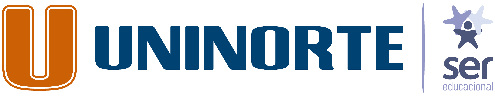
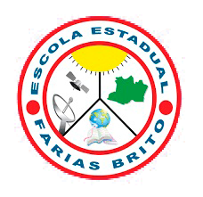

Experiência
2021
Desenvolvedor Web | Front - End
CMD Consultoria
Exercia atividades de desenvolvimento web front-end (HTML, CSS, JavaScript, ReactJS) para um projeto acadêmico da empresa CMD Consultoria em parceria com a minha universidade, sendo um Estágio Supervisionado.

2018 - 2021
Ciência da Computação
Centro Universitário do Norte - UNINORTE
Bacharel em Ciência da Computação pela universidade Uninorte, uma das renomadas universidades da região norte do Brasil.
2018 - 2020
HelpDesk
Infosystem
Realizava as seguintes atividades:
1. Manutenção e formatação de desktop e notebooks.
2. Instalação, configuração e atualização de softwares.
3. Abertura e fechamento de ocorrências.
4. Testagem de sistemas para verificar alguma lentidão ou falhas.
5. Atendimento e suporte ao cliente.
6. Gestão de tickes (LiveAgent e AzureDesk)
7. Suporte remoto via TeamViewer e AnyDesk.
2015 - 2017
Ensino Médio
Escola Estadual Farias Britto
O ensino médio consiste na última etapa na educação básica no Brasil. O objetivo desta etapa de ensino é dar uma formação voltada para o mercado de trabalho e universidades.
